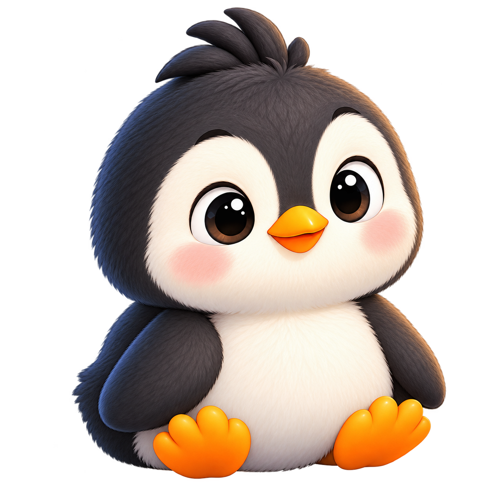

이야기
이야기를 골라요
📖 이야기 활동 선택
현재: 일반 문장 활동
이 이야기로 어떤 말을 만들어 볼까요?
아래에서 하나를 골라도 되고, 내 생각을 직접 말해도 됩니다.
최근 수행에 맞는 난이도 제안
무슨 말을 하고 싶어요?
마이크 버튼을 누르고 천천히 말해 주세요.
인식된 말
음성 인식이 지원되지 않으면 글자로 직접 입력할 수 있습니다.
사진 속 내용은 아직 사실로 확정되지 않았어요.
AI의 관찰 후보는 내가 확인한 뒤에만 문장에 사용할 수 있습니다.
AI의 관찰 후보는 내가 확인한 뒤에만 문장에 사용할 수 있습니다.
2. 표현 목적
어떤 말을 하고 싶은가요?
궁금한 것 찾기
무엇이 궁금해요?
답 알아보기
문장 고르기
마음에 드는 문장을 골라요
4. 확인·거절
이 문장이 내가 하려던 말과 맞나요?
단어 하나 더
생각나는 단어를 하나 더 넣어 보세요
이야기 이어가기
조금 더 이야기해 줄래요?
7. 내 말로 표현하기
이제 문장을 보지 않고 네 말로 한번 말해볼래요?
8. 최소 교정
내 말의 뜻은 그대로 두고 필요한 부분만 살펴볼게요.
내 원문
최소 교정 제안
9. AI에게 요구하기
AI에게 무엇을 부탁하고 싶어요?
완성 요구문
10. AI 결과 평가
AI의 답이 내가 원했던 답인가요?
다시 요구할 문장
11. 짧은 담화
다음 문장을 이어 말해 볼까요?
12. 나의 문장사전
내 생각이 쌓여 나만의 문장 도서관이 됩니다.
완성한 문장뿐 아니라 처음 생각과 도움받은 과정도 함께 남아요. 다시 말하고, 다시 쓰고, 비슷한 상황에 활용할 수 있어요.
전체 0즐겨찾기 0표현 목적 0종
13. 교사용 누적 분석
문장 만들기 과정의 변화를 살펴봅니다.
진단이나 등급 판정이 아니라 수업 지원을 조정하기 위한 관찰 자료입니다. 기록 수가 적을 때는 변화 추세를 단정하지 않습니다.
학습자 사용성 테스트 프로토콜
실제 학습자가 수행할 때 아래 과업을 관찰합니다. 기록이 없으면 결과를 통과로 판정하지 않습니다.
사용성 테스트
14. 실제 학습자 사용성 테스트
어디에서 도움이 필요했는지 확인합니다.
정답률이 아니라 실제 사용 과정의 접근성과 독립성을 기록합니다. 기록은 이 기기에만 저장됩니다.
15. 지원 수준 자동조절
필요한 만큼만 도움을 제공합니다.
자동 모드는 최근 수행을 참고하지만, 언제든 교사·학습자가 직접 도움 수준을 바꿀 수 있습니다. 지원 수준은 능력 등급이 아닙니다.
현재 설정자동
23-12. 이야기 보물 도감
이야기 속 보물을 하나씩 발견해요.
선택한 이야기로 문장 활동을 끝내고 문장사전에 저장하면 그 작품의 보물이 열립니다. 도움을 받아도 불이익이 없고, 같은 보물은 한 번만 획득합니다.
내 보물 0/30한국 전래 0/10이솝우화 0/10세계 이야기 0/10
교사용 이미지 자산 점검
완성한 PNG를 assets/treasures/ 폴더에 정해진 파일명으로 넣으면 자동 적용됩니다.
13. 나의 성장
Lv.1 아기 펭귄
생각을 표현하기 시작했어요.
EXP · 다음 성장까지 EXP
EXP는 펭귄 성장에만 사용하고, 이야기 보물은 표현 경험으로 별도 수집합니다.
정답률이나 속도가 아니라 생각 표현·수정·재시도·저장 같은 참여로 성장합니다. `없어요`에는 불이익이 없습니다.
14. 학습 결과
이번에 내 생각이 이렇게 자랐어요.
처음 표현
최종 표현
표현 목적·지원